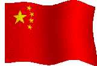
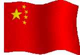
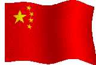
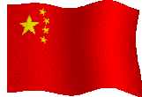

IRC CHINESE POKER
Bot by Nick

 
 
 
 
| Bonus Value (in betting units) | |
| Bonus hand | default |
| a. Natural: Dragon | 13 |
| b. Natural: 3 flushes | 4 |
| c. Natural: 3 straights | 4 |
| d. Natural: 6 pairs | 4 |
| e. Back: StrFlush | 5 |
| f. Back: Quads | 4 |
| g. Middle: StrFlush | 10 |
| h. Middle: Quads | 8 |
| i. Middle: FullHouse | 2 |
| j. Front: Trips | 3 |